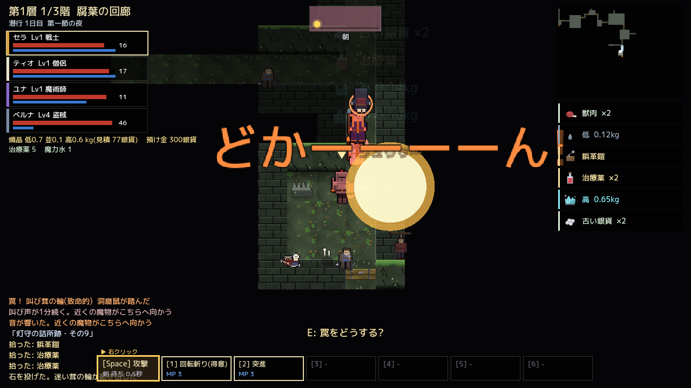
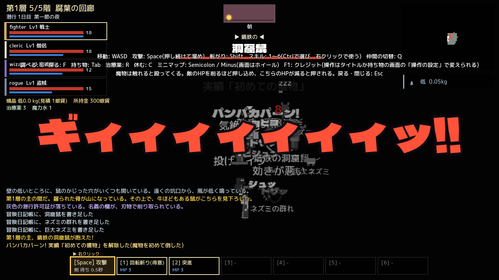
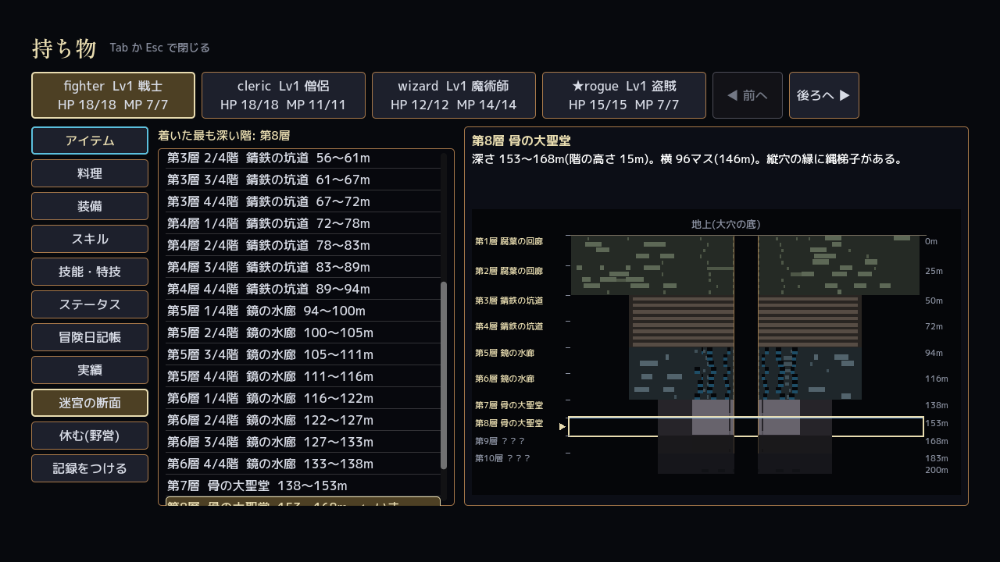
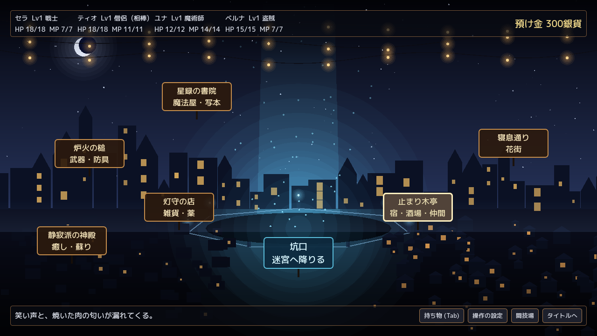
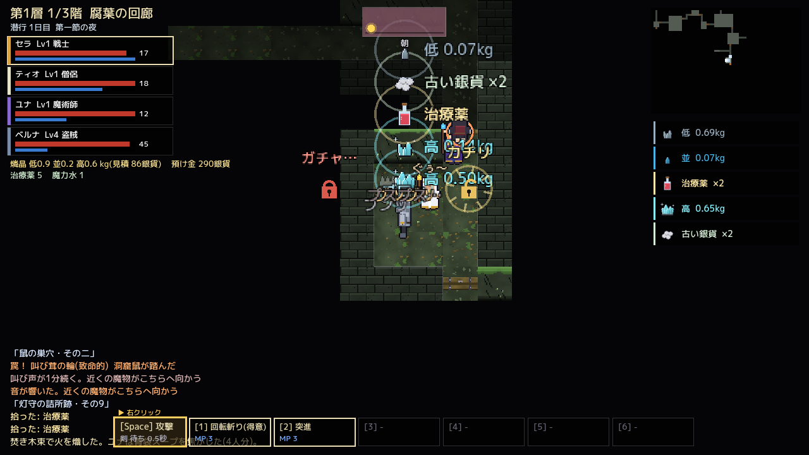
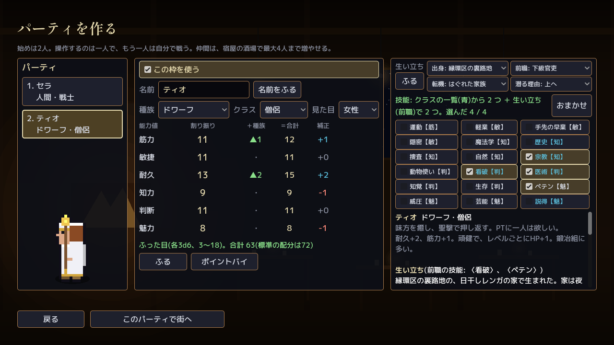
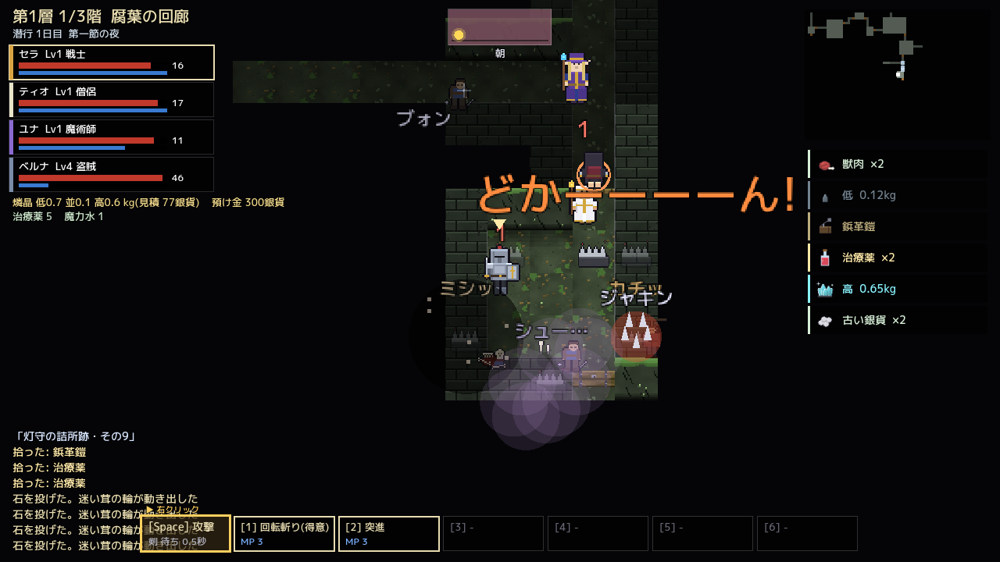
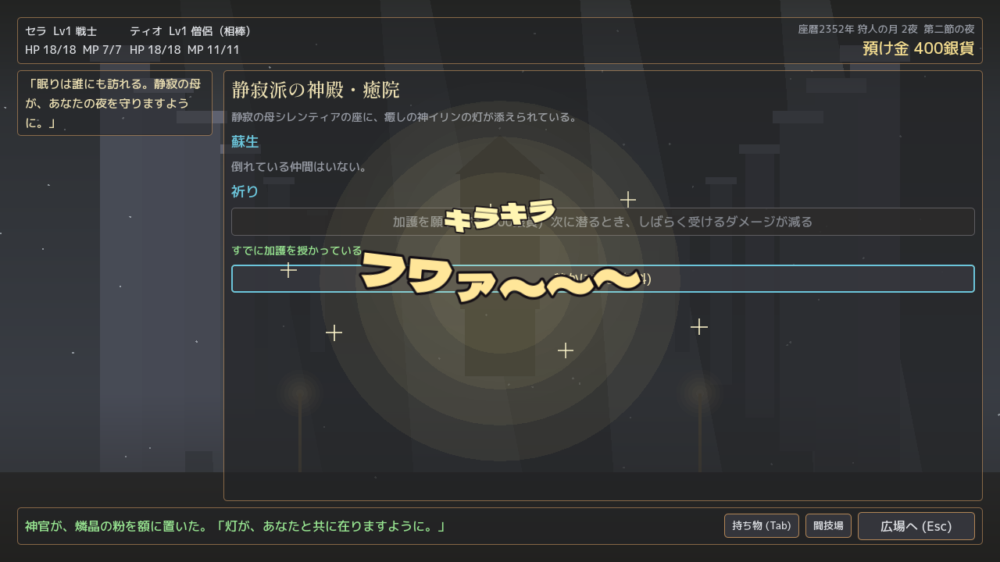

大穴を囲む街と、毎夜組み替わる迷宮
ヴェルガ・ノクスは、荒野に開いた巨大な縦穴「大穴」を囲んで築かれた迷宮都市。大穴の下の迷宮からは、魔力を帯びた鉱石、燐晶(りんしょう)が採れます。冒険者たちは夜ごと坑口から降りて燐晶を掘り、街へ持ち帰って暮らしを立てています。
迷宮の通路は毎夜組み替わり、七夜で一巡します。四人までの仲間を連れて潜り、罠を外し、魔物と押し合い、燐晶を背負って帰る。それを夜ごとに繰り返す、体当たりのハックアンドスラッシュです。
- 仲間を作るサイコロで能力値をふり、生まれと育ちを決める
- 街で支度する武具、薬、呪文書、食材をそろえる
- 迷宮へ潜る罠、魔物、層の主。燐晶を掘って袋に詰める
- 持ち帰る三割を税に納め、残りで次の夜へ
見どころ
手ごたえは、その場に浮かぶ擬音の文字で。効果音も曲もありません。

擬音が看板 バチン!
扉は「ギィ…」、解錠は「カチリ」、爆発の罠は「どかーーーーん!」。行動や出来事の一つ一つに、ベタな擬音の文字が跳ね、叩きつけられ、転がり、飛んでいきます。
音を鳴らす代わりに、文字そのものが手ごたえになるゲームです。

押し合う戦い
魔物には体当たりでぶつかり、HP を削るほど押し込み、こちらが削られると押し返される、昔ながらの押し合いの戦いです。攻撃は溜めて放つこともでき、転がって避けられます。
各層の底には層の主が待ち、咆哮とともに画面はモノクロに染まります。

深くなるほど、古く暗く ヒュウゥ…
縦穴の縁から覗けば、下の階が何層にも重なって見えます。縄梯子で降り、落とし穴に落ち、倒れた仲間を背負って帰る。
ときどき来る「吐く夜」には、日が落ちると迷宮が魔物を吐き出し、夜明けまで階段が塞がります。
苔と茸と鼠の巣。灯守の詰所の跡が残る
錆の罠と、五十年前の封鎖令の跡
浅瀬と水路。水鏡の間に読めない刻み
百二十年前の遠征隊が眠る
第十層から先へ行って、帰った者はいない

夜の街で暮らす チャリン
炉火の槌で武具を買い、止まり木亭で仲間を集め、静寂派の神殿で倒れた仲間を蘇らせる。酒場の噂、祭りの夜、坑口館の依頼と預金。
家を買えば台所や鍛冶場、実験室を増築して、料理や鍛冶、魔法の薬作りもできます。

腹が減っては ぐぅ〜
迷宮では腹が減ります。焚き木で火を熾し、拾った茸や魔物の肉で野営の料理を。上出来なら少しだけ力がつき、焦がせば「プスプス…」。
放っておいた料理は傷みます。くさったものを食べると、お腹を下します。
画面から
開発中の画面です。



このゲームについて
Urbs Labyrinthi は、実験的なコードを書き溜めていくための作品です。配布や販売、リリースを目的としておらず、ダウンロードの窓口もありません。動作や内容について、保証やサポートはありません。
ソースコードと開発の記録は GitHub にあります。
GitHub のリポジトリ